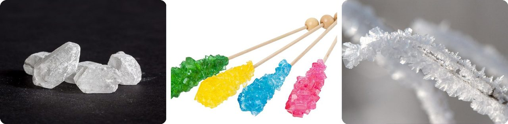
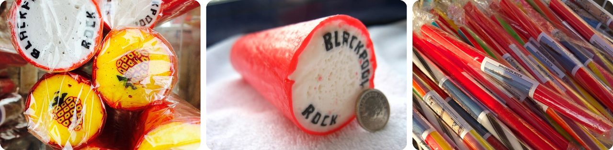

🌍 十大 冰糖
2026年11月24日
1. 🍬 英文的“candy”（糖果）最早就是指冰糖

冰糖其实就是长成大块晶体的糖。把很多很多糖溶进热水里，多到凉水根本装不下。水一变凉，多出来的糖没地方去，就粘在一根线或一根小棍上，慢慢长成晶体。大约要六到七天。人们做这件事已经很久很久了。早在 9 世纪上半叶，也就是 1,100 多年前，伊斯兰世界的作家就记录了用这种办法让糖长出晶体。
更妙的是：英文的“sugar candy”来自古法语，古法语又来自阿拉伯语 qandi，再往前是波斯语 qand（“甘蔗糖”），很可能最早来自梵语 khanda（“一块糖”）。后来，“candy”才慢慢变成所有糖果的意思。
说白了，所有糖果的名字都是跟冰糖借的。
2. 🇯🇵 日本军队的口粮罐头里装着金平糖
 金平糖（konpeitō）是日本一种小小的、表面凹凸不平的星星糖，直径大约 5 到 10 毫米，跟一颗豌豆差不多大。每一颗都从一粒粗砂糖开始。师傅把这些糖粒放进一个像锣一样的大加热锅里转，不停地往上浇糖浆，它们就一天比一天大一点。
金平糖（konpeitō）是日本一种小小的、表面凹凸不平的星星糖，直径大约 5 到 10 毫米，跟一颗豌豆差不多大。每一颗都从一粒粗砂糖开始。师傅把这些糖粒放进一个像锣一样的大加热锅里转，不停地往上浇糖浆，它们就一天比一天大一点。
这很慢：一锅要做 7 到 13 天。所以直到今天，金平糖还是由手艺人亲手做的。
日本军队的应急口粮里就有金平糖，和又硬又干的面包装在一起。规定里连颜色都写好了：8 颗白的、3 颗红的、2 颗黄的、2 颗绿的。糖会让你嘴里流口水，这样干面包就好嚼多了。
你可以把它想成一颗有任务的糖。
3. 🇮🇷 在伊朗，喝茶要配一根藏红花冰糖棒
 在伊朗，给茶加甜味最常见的办法就是 nabat，一种长在小棍或线上的冰糖。最受欢迎的口味是藏红花，它让晶体变成金黄色，还带点苦味。人们一边喝茶一边小口吃它，或者放进茶里让茶变甜。
在伊朗，给茶加甜味最常见的办法就是 nabat，一种长在小棍或线上的冰糖。最受欢迎的口味是藏红花，它让晶体变成金黄色，还带点苦味。人们一边喝茶一边小口吃它，或者放进茶里让茶变甜。
伊朗做的冰糖可不少。大部分来自礼萨呼罗珊省，在 2020 年代，那里每年产 21 万多吨，差不多有 20 座埃菲尔铁塔那么重。
在旁边的中亚，同样的糖叫 novvot。在乌兹别克斯坦，有时会用葡萄汁代替水来做，晶体要长三天。联合国教科文组织把它列为乌兹别克斯坦文化遗产的一部分。
一把永远不用洗的糖勺子。
4. 🇨🇳 中国传说里，冰糖治好了皇帝宠妃的病
 糖葫芦是穿在竹签上、亮晶晶的裹糖山楂，是中国北方的经典街头小吃。它还有一个名字叫冰糖葫芦（bīngtáng húlu）。“冰糖”（bīngtáng）指的就是这种结晶的糖块，“葫芦”（húlu）指的是它一串串、像葫芦一样鼓鼓的样子。
糖葫芦是穿在竹签上、亮晶晶的裹糖山楂，是中国北方的经典街头小吃。它还有一个名字叫冰糖葫芦（bīngtáng húlu）。“冰糖”（bīngtáng）指的就是这种结晶的糖块，“葫芦”（húlu）指的是它一串串、像葫芦一样鼓鼓的样子。
这个传说要追溯到宋朝，大约 800 年前。皇帝最宠爱的妃子病了，什么都不肯吃。一位大夫让厨子用冰糖煮山楂，让她每顿饭前吃五到十颗。几天后她就好了，后来人们就开始把山楂串起来在街上卖。
在古代中国，冰糖是只有有钱人家才吃得起的奢侈品。如今在中国，它是厨房里的家常东西，用来泡茶、煮糖水和做菜。
换句话说，一味宫廷药方变成了街头小吃。
5. 🇩🇪 在东弗里斯兰，喝茶千万别搅
 东弗里斯兰是德国西北部的一片沿海地区，那里的人特别爱喝茶：德国进口的茶里，将近 75% 都是被他们喝掉的。而且他们喝茶有严格的规矩。
东弗里斯兰是德国西北部的一片沿海地区，那里的人特别爱喝茶：德国进口的茶里，将近 75% 都是被他们喝掉的。而且他们喝茶有严格的规矩。
先在空杯子里放一块叫 Kluntje 的白冰糖。再把又热又浓的茶浇在上面。然后在最上面加一勺浓奶油，它会散开成一朵“云”，叫 Wölkje。奶油是云，茶是水，糖是陆地。
接着不搅就喝，这样能喝出三层：先是奶油，然后是茶，最后杯底是甜味。一搅就全混成一种味道了，那可是错误喝法。Kluntje 化得特别慢，一块能甜好几杯。
说白了，这是装在茶杯里的三道菜。
6. 🇬🇧 布莱克浦“棒糖”里的字母不是按顺序做的

英国海边卖的“rock”和冰糖不是一种糖。它是一根硬硬的熬糖棒，通常是薄荷味，镇名从头到尾贯穿整根糖，所以每咬一口都还能看到字。19 世纪 30 年代，莫克姆成了第一个做出带字棒糖的小镇。每个字母一开始大约只有一个指纹那么大，是用彩色和白色的糖条拼出来的。它们不是按拼写顺序做的。B、L、K 这种“方”字母先做，因为它们不容易变形。O、C 这种圆字母最后做，免得塌下去。
字母围着白色的糖芯排好，再裹成一根巨大的热糖柱，粗得两只手都合不拢。然后一名工人把它拉成又长又细的糖条，字母就缩成最后那么小。所有带字的棒糖到今天都还是手工做的。
你可以把它想成先写好一个词，再把它拉成一根糖。
7. 🏴 据说爱丁堡石头糖是因为被忘掉才发明的
 爱丁堡石头糖（Edinburgh rock）一点也不硬。它又软又酥，用糖、水和塔塔粉做成，是一根根淡彩色的糖条，有姜味、柠檬味等口味。
爱丁堡石头糖（Edinburgh rock）一点也不硬。它又软又酥，用糖、水和塔塔粉做成，是一根根淡彩色的糖条，有姜味、柠檬味等口味。
它最早是在 19 世纪由亚历山大·弗格森做出来的，人称“糖果桑迪”。有个流传很广的故事说，他发现了一盘被忘了好几个月的糖。糖已经干透了，他尝了一块，结果特别好吃。没人知道这是不是真的。
可以确定的是：这种糖卖得太好了，他回到老家小镇唐恩时已经是个大富翁。那里的一块纪念牌说，他把自己出生的那条街的大部分都买了下来，后来那条街就被叫作“糖果巷”。
一个能吃的美丽意外。
8. 🇮🇳 德里有家甜品店从 1790 年起就在卖冰糖甜点
 在印度，冰糖叫 mishri。人们把它当糖吃，或者用来给牛奶和茶加甜。它还会和 khoya（煮到很浓稠的牛奶）一起做成奶制甜点，比如 mishri-mawa，也叫 kalakand。
在印度，冰糖叫 mishri。人们把它当糖吃，或者用来给牛奶和茶加甜。它还会和 khoya（煮到很浓稠的牛奶）一起做成奶制甜点，比如 mishri-mawa，也叫 kalakand。
德里有家甜品店叫 Ghantewala Halwai，从 1790 年起就开始卖 mishri-mawa，到现在已经 230 多年了。如今它卖 40 种用冰糖做的甜点。
这些奶制甜点在印度北部和西部最受欢迎，比如德里、拉贾斯坦、旁遮普和古吉拉特。
换句话说，一家店把同一样甜点卖了 230 多年。
9. 🇺🇸 美国第一种工厂做的糖果，来自一场海难
 1806 年，斯宾塞一家从英国搬到马萨诸塞州的塞勒姆，可一场海难让他们几乎什么都没剩下。新邻居们凑了些东西给他们，其中有一桶糖，因为大家都知道斯宾塞太太很会做糖。
1806 年，斯宾塞一家从英国搬到马萨诸塞州的塞勒姆，可一场海难让他们几乎什么都没剩下。新邻居们凑了些东西给他们，其中有一桶糖，因为大家都知道斯宾塞太太很会做糖。
她做了柠檬味和薄荷味的硬糖，叫 Gibraltars，在镇上第一教堂的台阶上卖。卖得太好了，她买了一匹马和一辆马车，去附近的镇子卖。Gibraltar 糖被称为美国第一种商业化生产（当成生意来做、拿来卖）的糖果。
硬糖只要保持干燥就能放很久很久，所以船长们把 Gibraltars 带到了世界各地的港口。塞勒姆的 Ye Olde Pepper Companie 到今天还在卖它。
所以说，美国的糖果生意是从邻居送的一份礼物开始的。
10. 🎵 《大冰糖山》最早是一首关于离家出走的歌
 《大冰糖山》（The Big Rock Candy Mountains）是一首民谣，唱的是流浪工人（hobo，扒火车四处打零工的人）心里的梦想世界。哈里·麦克林托克说这首歌是他 1895 年写的，他在 1928 年把它录了下来。
《大冰糖山》（The Big Rock Candy Mountains）是一首民谣，唱的是流浪工人（hobo，扒火车四处打零工的人）心里的梦想世界。哈里·麦克林托克说这首歌是他 1895 年写的，他在 1928 年把它录了下来。
他在 19 世纪 90 年代当街头艺人时唱的那个版本要阴暗得多。歌里讲的是一个孩子被“冰糖山”的故事哄着，走上了流浪的生活。录音之前，他把歌词改干净了。
后来，为了小朋友，它又被改了一遍。在儿童版里，“香烟树”变成了薄荷糖树，酒的小溪变成了柠檬水，威士忌湖变成了汽水湖。1949 年伯尔·艾夫斯唱的儿童版让它红了起来。
一首大人的歌，被改成了糖果乐园摇篮曲。
趣闻
金平糖还帮人敲开过日本的大门。1569 年，一位叫路易斯·弗洛伊斯的葡萄牙传教士送给战国大名织田信长一玻璃瓶金平糖，想换取传教的许可。几百年后，这种糖受欢迎到在日语里，柴可夫斯基芭蕾舞剧《胡桃夹子》里的糖梅仙子变成了“金平糖の精”（Konpeitō no Sei），也就是“金平糖仙子”。《胡桃夹子》里藏着的各种甜食，从糖梅到杏仁糖，是下一个值得探索的大世界。
图片来源（Wikimedia Commons）
- #1: Kandiszucker -- 2018 -- 3588.jpg by Dietmar Rabich, CC BY-SA 4.0
- #1: Rock-Candy-Sticks.jpg by Evan-Amos, CC BY-SA 3.0
- #1: Rock candy (flickr) by Biker Jun, CC BY-SA 2.0
- #2: Konpeito Candy.jpg by Islandsislands, CC0
- #2: #012 Konpeito taken by EX-Z40 (flickr) by aki.sato, CC BY-SA 2.0
- #2: Konpeito, Nishiki Market.jpg by Owleksandra, CC BY-SA 4.0
- #3: Iranian nabat.jpg by Teardrops777, CC BY 4.0
- #3: Saffron rock candy.jpg by Rye-96, CC BY-SA 4.0
- #3: Tea time at historic Chah-e Haji Mirza Café in Isfahan. Persian tea served with goshe fil and nabat.jpg by EiersalatmitGurken, CC0
- #4: TangHuLu.JPG by Popo le Chien, CC0
- #4: Guangxi old rock candy.jpg by Fumikas Sagisavas, CC0
- #4: Tanghulu-shanghai.jpg by Zhu Jian / Flickr user: zhu4905jian ( https://www.flickr.com/photos/7672101@N06/ ), CC BY 2.0
- #5: Tee mit sahnewolke.JPG by Ke.We., CC BY 3.0
- #5: Ostfriesentee.jpg by Frank van Anken, CC BY-SA 3.0
- #5: Kandiszucker -- 2018 -- 3590.jpg by Dietmar Rabich, CC BY-SA 4.0
- #6: Blackpool Rock (15107520364).jpg by Hazel Scott from Sheffield, UK, CC BY 2.0
- #6: Blackpool Rock (flickr) by Kate C Hopkins, CC BY 2.0
- #6: Brighton Rock (6950629923).jpg by Paul Hudson from United Kingdom, CC BY 2.0
- #7: Edinburgh Rock.jpg by The original uploader was Mebanana at English Wikipedia., Public domain
- #7: Ferguson's Edinburgh Rock advertisement (1982).JPG by Kim Traynor, CC BY-SA 4.0
- #7: Sweetie Lane heritage plaque.jpg by LocalMapEditor, CC BY-SA 4.0
- #8: Fennel seeds and rock sugar, Indian aftermint.jpg by Connie Ma from Chicago, United States of America, CC BY-SA 2.0
- #8: Misri.JPG by Miansari66, Public domain
- #8: Kalakand2.JPG by Pradeep717, CC BY-SA 3.0
- #9: Gibralters Candy Wrapper.jpg by Eanalla, CC0
- #9: Ye Olde Pepper Company, 122 Derby St, Salem (493760) (flickr) by Bob Linsdell, CC BY 2.0
- #9: Ye Olde Pepper Companie (flickr) by Kate C Hopkins, CC BY 2.0
- #10: Big Rock Candy Mountain Marysvale Utah 19970724.jpg by Jstuby, CC0
- #10: Big Rock Candy Mountain (19546490).jpg by Liji Jinaraj from San Francisco, USA, CC BY-SA 2.0
- #10: Big Rock Candy Mountian - panoramio.jpg by hakkun, CC BY-SA 3.0


.jpg){kind=link}
.jpg){kind=link}

.JPG){kind=link}


.jpg){kind=link}